My Portfolio
This Portfolio contains projects I did on my own and
while I attended Cal Poly Pomona. It contains either the
code, website, or both of each project. Also, below is a button
that will give a copy of my resumé. Click the button if you want
to view it.
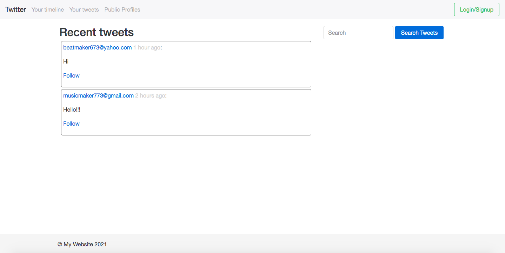
This is a website trying to replicate the infamous social media website we all know as "Twitter". This was heavily coded in PHP (with embedded JS and HTML) and CSS. It is also connected to a MySQL database, and this website is hosted for free on InfinityFree.
Coronavirus Appointment
Scheduler Website Server
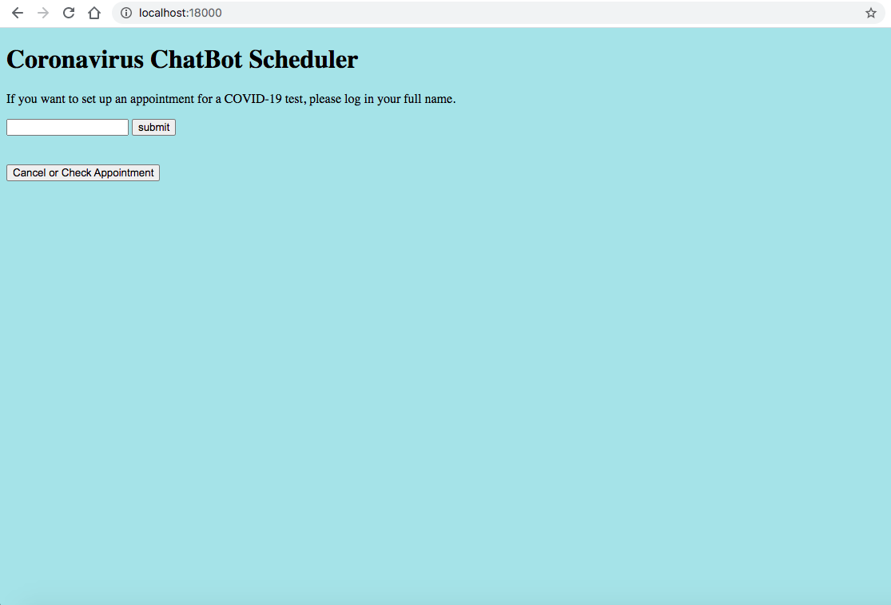
This is a server I created in C for a final project in OS class. It contains other C files that handles requests via multithreading with a thread pool and typed-in HTML pages. This project was ran in a MacOS terminal.
Edit: I modified the server even more by adding a database and SQLite commands to interact with it, which means that the server has permanet data now. Click on the second Code button to see that version of the server.
Excelsior's Music Website
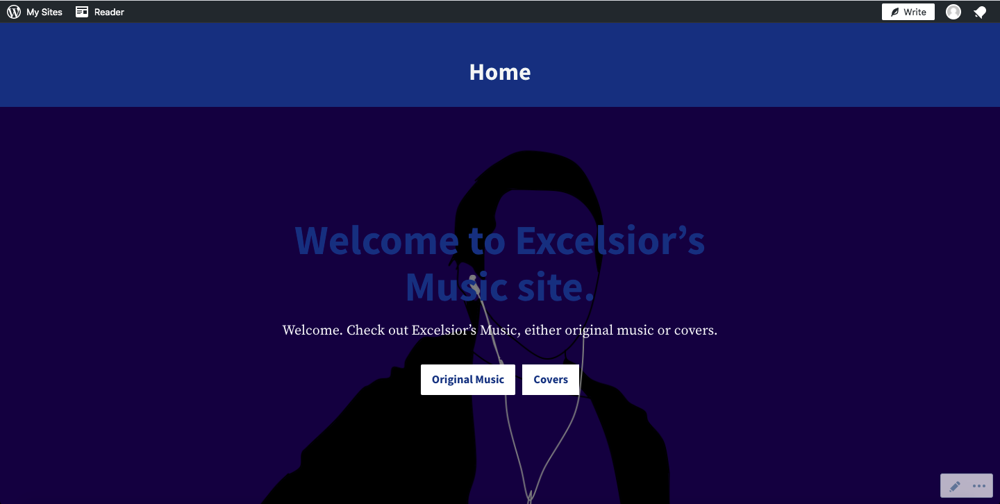
This is a Wordpress website I created for the music I have created and covered. This is hosted and made on Wordpress.
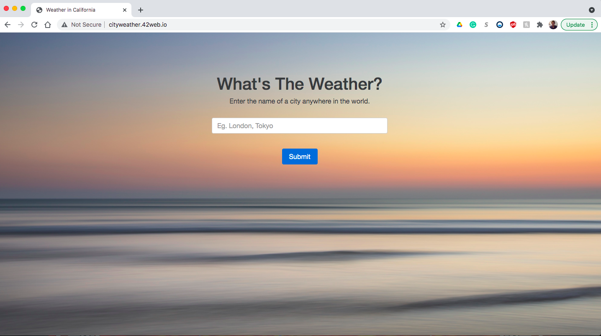
This is a PHP file that uses a weather API and checks the weather in temperature and sky condition. This is hosted on Infinity Free.
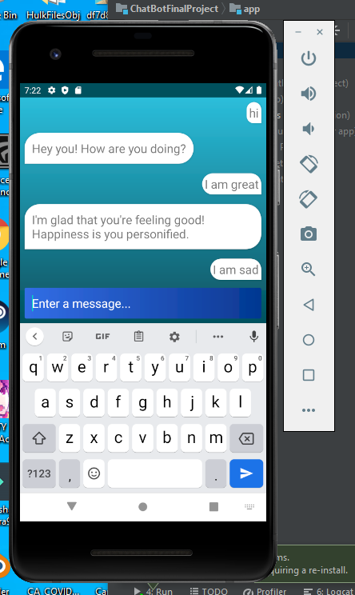
This is a therapy Chatbot we had to make during our Software Engineering Class. This was coded in XML and Java, while connecting to a server with a REST API. This was made in Android Studio.
Coronavirus Case Predictor
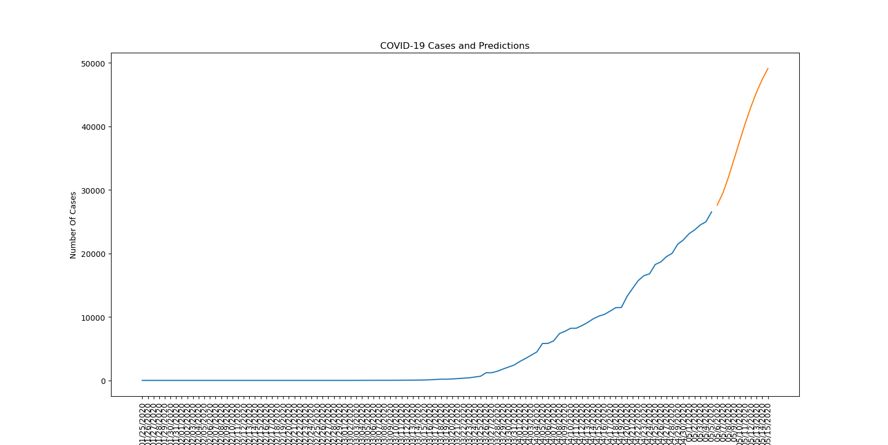
This is a Coronavirus Case Predictor coded in Python with Pandas and Numpy. It predicted ten days ahead of the last date of the CSV file of data of either LA County or Orange County. This was made in PyCharm.
Java Mini-Twitter GUI (Admin POV)
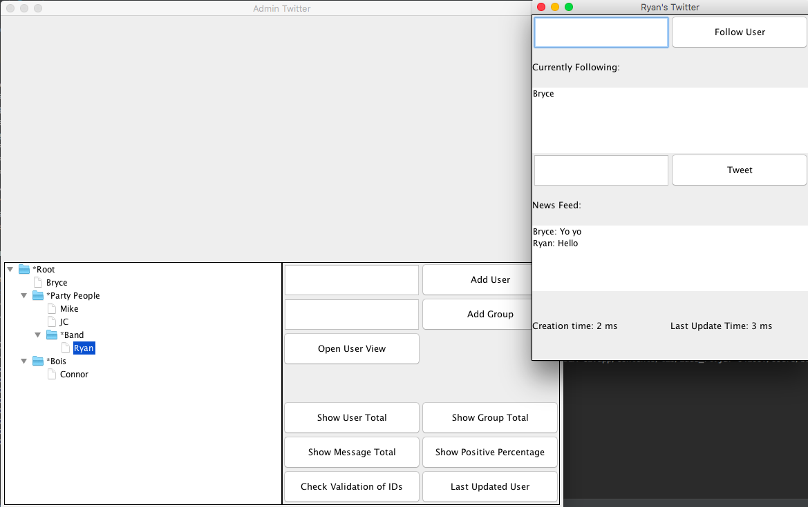
This is a Java GUI that "imitates" twitter, but it is coded in an Admin's perspective. This was done in Intellij.
Chatbot (with Angular JS)
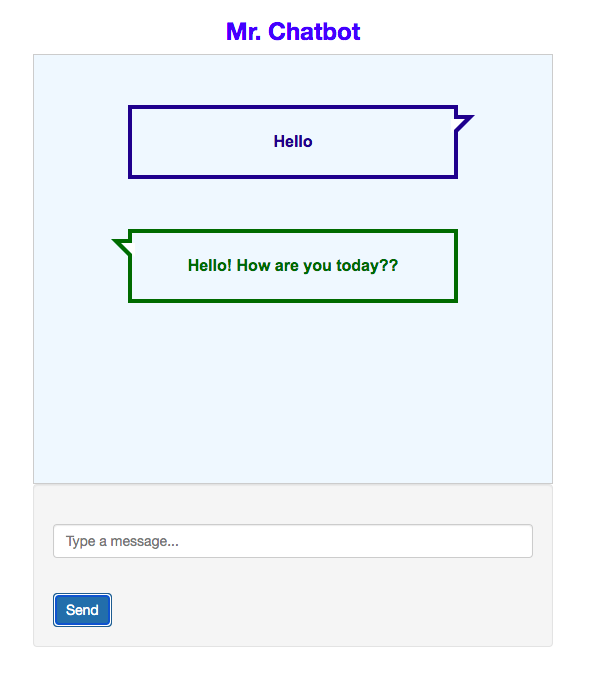
This is a remake of the Android Chatbot, only it's coded in HTML, CSS, and Angular JS. This is hosted by Github pages.
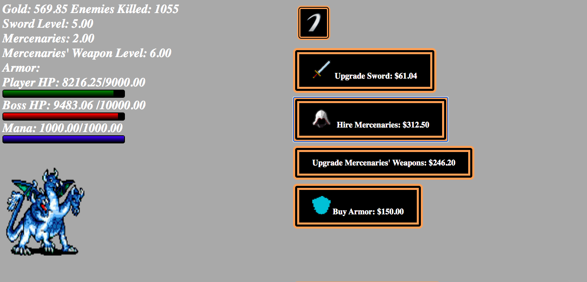
This is a game I created with a group in Game Dev class. It's a clicker game coded in HTML, CSS, and Javascript. The game is posted in itch.io.
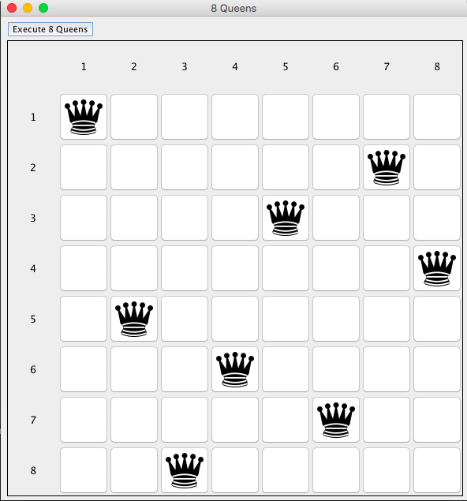
This is a Java GUI project made in Intellij that can find an "Eight Queens" solution. It uses backtracking.
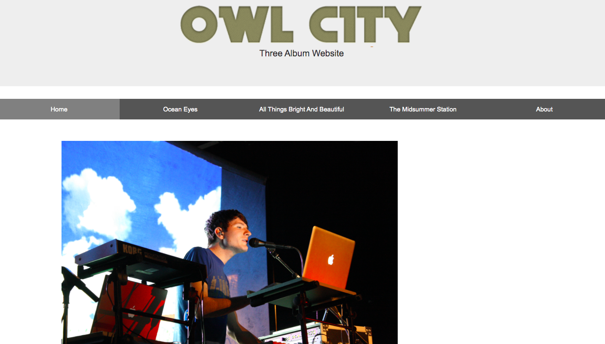
This is an old HTML page I made that has embeded playlists of the first three Owl City albums. This website is hosted with Github pages.